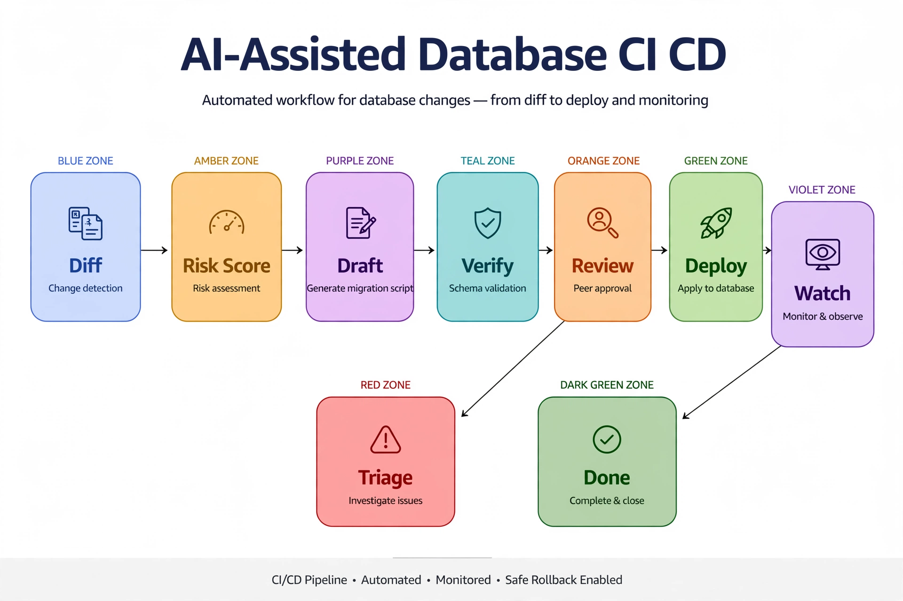

Chapter 35: AI in Database CI/CD Pipelines
Book 5 covers CI/CD mechanics for databases — pipeline structure, dacpac builds, migration runners, environment promotion. This chapter assumes that machinery exists and covers only where AI adds leverage inside it. The pipeline already knows how to deploy; AI helps it decide whether this deploy is safe, draft the migration script for human review, detect drift between environments with severity judgment, and triage post-deploy regressions without waking anyone. Four leverage points, each with a concrete pattern — no pipeline tutorials, just the intelligence layer.
---
Deployment Risk Scoring: A Go/No-Go Signal
Every deploy carries risk, but pipelines treat all deploys identically: same checks, same approvals, same anxiety. A risk-scoring model changes that by producing a per-deploy risk score from features the pipeline already has — the schema diff, the workload context, and the deploy's history:
Diff features: tables altered, columns added/dropped, indexes dropped or rebuilt, stored procedures changed. Dropped columns and offline index rebuilds score high; new stored procedures score low.
Hot-object overlap: does the diff touch objects in the top Query Store consumers? Altering a table that serves 40% of batch requests is riskier than altering a table nobody queries. This is the feature most teams miss — risk is not a property of the diff alone, but of the diff intersected with production workload:
-- Hot-object overlap: which changed tables are production-critical?
-- Feed the deploy's changed-table list as a table variable
DECLARE @changed_tables TABLE (schema_name sysname, table_name sysname);
-- (populated by the pipeline from the schema diff)
SELECT
c.schema_name,
c.table_name,
SUM(qsrs.count_executions) AS total_executions_7d,
SUM(qsrs.avg_duration * qsrs.count_executions) / 1000.0 AS total_duration_sec_7d,
COUNT(DISTINCT qsq.query_id) AS distinct_queries
FROM @changed_tables c
JOIN sys.tables t
ON t.name = c.table_name
AND t.schema_id = SCHEMA_ID(c.schema_name)
-- Queries touching this table via Query Store plan references
JOIN sys.query_store_plan qsp
ON qsp.query_plan LIKE '%Object="%' + c.schema_name + '.' + c.table_name + '%"%' ESCAPE '\'
JOIN sys.query_store_query qsq ON qsq.query_id = qsp.query_id
JOIN sys.query_store_runtime_stats qsrs ON qsrs.plan_id = qsp.plan_id
JOIN sys.query_store_runtime_stats_interval qsrsi
ON qsrsi.runtime_stats_interval_id = qsrs.runtime_stats_interval_id
WHERE qsrsi.start_time > DATEADD(DAY, -7, GETUTCDATE())
GROUP BY c.schema_name, c.table_name
ORDER BY total_duration_sec_7d DESC;Lock-risk operations: schema changes that take restrictive locks (offline rebuilds, certain ALTER TABLE operations) during business hours score high; the same operations in a maintenance window score lower.
History features: has this object been involved in a failed or rolled-back deploy before? Objects with incident history carry a multiplier.
The model output drives a three-way gate: auto-deploy (low risk — new procedures, additive changes on cold objects), require approval (medium risk — hot-object overlap, index changes), block (high risk — destructive operations, hot-table schema locks during business hours). Train the scorer on your deploy history: features from past diffs labeled with deploy outcome (clean, rolled back, incident). Even a simple logistic regression on a few dozen labeled deploys beats uniform treatment — because the current alternative is not a smarter gate, it is no gate at all.
---
AI-Generated Migration Scripts — Generate, Then Verify
The highest-leverage AI use in the deploy path is drafting migration scripts from intent: "add a non-nullable CustomerTier column to Sales.Customers with a default, backfill existing rows in batches." The model produces T-SQL; the pipeline then proves the script before any human reviews it. The order matters: generate, then verify, then human review. Never generate-and-apply.
The generation prompt carries the schema context (table definition, row count from stats, existing indexes and constraints) plus hard constraints:
MIGRATION_GEN_PROMPT = """
You are a SQL Server migration script author. Draft a T-SQL migration script
from the requested change and the schema context provided.
HARD CONSTRAINTS:
- Valid T-SQL only. Reference only objects present in the schema context.
- Batch data modifications (TOP N loops) for tables over 1M rows; never a
single unbatched UPDATE on a large table.
- Wrap in explicit transaction with TRY/CATCH and rollback on error.
- Idempotent where possible: guard with IF NOT EXISTS / COL_LENGTH checks.
- Never emit DROP TABLE, TRUNCATE TABLE, or data-loss column changes.
If the request implies data loss, refuse and explain why.
OUTPUT: a single JSON object:
{
"script": "<the T-SQL script>",
"risk_notes": ["<locking, duration, or rollback considerations>"],
"estimated_lock_impact": "low|medium|high",
"refused": <boolean>
}
"""The verification stage is what makes this safe enough for production pipelines. It runs automatically on every generated script:
1. Parse and destructive-op scan. Parse the T-SQL and reject on any destructive statement the constraints forbid — defense in depth behind the prompt's own refusal rule.
2. Dry-run on a restored clone. Restore last night's backup to an isolated instance, run the script, measure duration and log growth. A backfill the model estimated at "low impact" that takes 40 minutes on the clone gets flagged before it touches staging.
3. Idempotency check. Run the script twice against the clone; the second run must be a clean no-op. Non-idempotent migrations are the classic cause of half-applied deploy retries.
Only after all three verifications pass does the script reach human review — and the reviewer sees the script plus the verification report (dry-run duration, lock impact, idempotency result) plus the model's risk notes. The human approves a proven artifact, not a guess. The model proposes, the pipeline proves, the DBA approves.
---
Drift Detection with AI-Classified Severity
Environments drift: someone hotfixes production directly, a permission gets granted manually, an index gets dropped "temporarily" during an incident and never restored. Traditional drift detection diffs schema snapshots and reports everything — a hundred-line diff where one line matters. AI adds the missing layer: severity classification of each drift item.
The pipeline snapshots the catalog per environment on a schedule — sys.tables, sys.indexes, sys.sql_logins, sys.database_permissions, or a dacpac extract — and diffs them. Each diff item goes to a classifier with four severity classes:
Cosmetic: extended properties, description changes. Log only.
Expected: matches a known change ticket or deploy record. Auto-reconcile by updating the baseline snapshot.
Breaking: missing index, dropped column, changed data type, revoked permission that an application depends on. Generate a remediation script (recreate the index, re-grant the permission) for human review — this is the migration-generation pattern applied to drift.
Security-relevant: new login, elevated role membership, new permission grant outside the deploy pipeline. Page immediately — drift in the security surface is never auto-remediated.
The classifier itself can be a rules-assisted model: deterministic rules catch the obvious cases (any sysadmin role grant is security-relevant, full stop), and the model handles the ambiguous middle — is this missing index breaking or was it intentionally dropped as unused? It answers by checking sys.dm_db_index_usage_stats: an index with zero reads since the last restart that disappeared is probably intentional cleanup; one with heavy reads is a breaking regression someone needs to explain.
-- Drift triage helper: was a dropped index actually used?
-- Run for each index present in baseline but missing in production
SELECT
OBJECT_SCHEMA_NAME(i.object_id) AS schema_name,
OBJECT_NAME(i.object_id) AS table_name,
i.name AS index_name,
ius.user_seeks + ius.user_scans + ius.user_lookups AS total_reads,
ius.user_updates AS total_writes,
ius.last_user_seek,
ius.last_user_scan
FROM sys.indexes i
LEFT JOIN sys.dm_db_index_usage_stats ius
ON ius.object_id = i.object_id
AND ius.index_id = i.index_id
AND ius.database_id = DB_ID()
WHERE i.object_id = OBJECT_ID(@schema_name + '.' + @table_name)
AND i.name = @index_name;
-- total_reads = 0 since restart: likely intentional cleanup (Expected)
-- total_reads high: breaking drift, generate remediation (Breaking)---
Post-Deploy Verification the Pipeline Triages Itself
The deploy succeeded — but did it succeed well? Post-deploy verification watches Query Store for a window after each deploy, scoped to the changed objects, and the AI layer triages whatever it finds. Without scoping, post-deploy monitoring drowns in unrelated workload noise; without triage, every blip pages someone.
The pattern: for N minutes after deploy completion (30–120 depending on deploy risk score), the pipeline compares per-query runtime stats for queries touching changed objects against their pre-deploy baseline from Query Store. Deltas get classified: regression (statistically significant slowdown on a changed-object query — recommend plan investigation or stats update), expected change (plan shape changed but performance neutral or better — log and close), noise (within normal variance — suppress).
For genuine regressions, the pipeline reuses the self-healing loop from Chapter 10 — LLM analysis of the regressed query recommending statistics refresh, plan force via sp_query_store_force_plan, or escalation — but scoped to the deploy's blast radius and time-boxed to the verification window. If the regression is severe (say, 3x slowdown on a top-10 query) and confidence is high, the pipeline raises a rollback recommendation: not an automatic rollback, but a paged recommendation with the evidence attached, so the human decision takes seconds instead of an hour of forensics.
This closes the CI/CD intelligence loop: risk scoring gates the deploy going in, verification watches it coming out, and both feed the same deploy-history dataset that trains the next risk model. Every deploy makes the next deploy's risk score smarter.

Seven stages run left to right. Blue Diff detects the schema change; amber Risk Score classifies it as auto, approve, or block. Purple Draft generates the migration script from the stated intent; teal Verify runs parse scans, clone dry-runs, and idempotency checks. Orange Review is the human approval of script plus verification report; green Deploy applies it; and violet Watch monitors Query Store scoped to the changed objects. If the watch detects a regression, the red Triage stage investigates (statistics, forced plans); otherwise the dark-green Done stage closes it out. The pipeline's ambition: the database change triages itself, and the human reviews evidence instead of writing scripts.
*The CI/CD intelligence loop: risk scoring gates entry, verification watches exit, drift detection feeds remediation drafts, and every outcome trains the next risk score.*
---
Guardrails for AI in the Deploy Path
AI in the deploy path earns trust through constraints, not capabilities. The guardrail set:
Policy as prompt, enforced as code. The migration prompt's prohibitions are re-checked by the verification stage's destructive-op scan. Prompt rules without code enforcement are suggestions; code without prompt guidance produces false rejections. You need both.
Blast-radius limits. AI-generated scripts deploy to one database per run, with canary environments first. A script that passes verification on the clone still meets staging before production — the pipeline stages do not collapse just because a model wrote the script.
Destructive operations are never AI-authorized. Any diff containing drops, truncates, or data-loss column changes routes to mandatory human review regardless of risk score. The model may draft the script; it may never approve its own blast radius.
Full audit of model-generated artifacts. Log the prompt version, model version, generated script, verification report, reviewer identity, and deploy outcome together. When a generated migration causes an incident six months later, this record is the difference between "we don't know what happened" and a precise postmortem.
Rollback plan before execution. No AI-generated script runs without a documented rollback — the inverse script or a restore point — attached to the same change record. Generation is cheap; reversibility is what makes it safe.
---
Key Takeaways
QueryOptimizer — Self-Hosted SQL Performance Workbench
EXPLAIN visualizer · Index advisor · Slow query dashboard · SQL Server
Test yourself on this chapter
5 questions · instant scoring · explanations included